Análisis de sensibilidad
Análisis de sensibilidad al modificar el número de carriles carriles.
Gráfica 1. Variación del Nivel de Servicio.
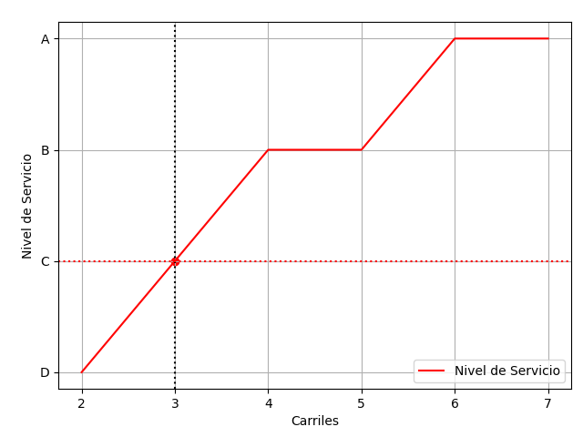
Gráfica 2. Variación de la Capacidad y volumen ajustado
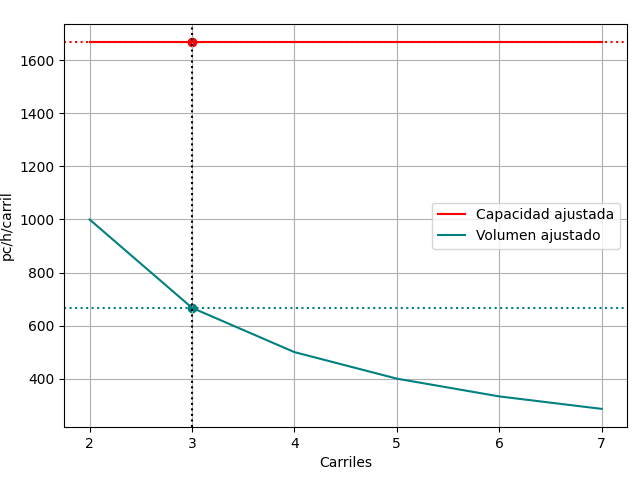
Gráfica 3. Variación de la densidad y velocidad FFS ajustada.
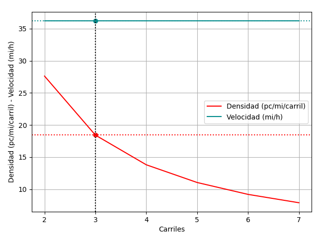
Análisis de sensibilidad al modificar el ancho de carril.
Gráfica 4.Variación del Nivel de Servicio.
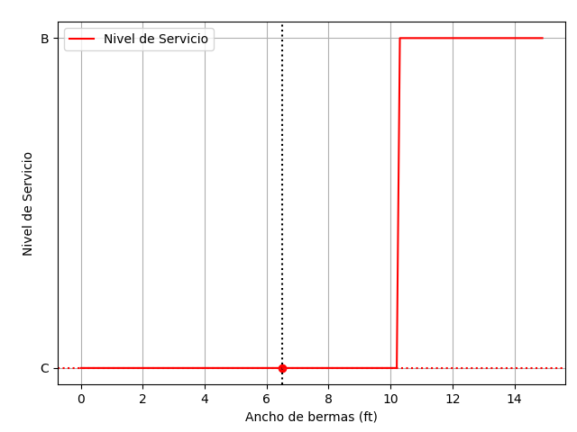
Gráfica 5. Variación de la Capacidad y volumen ajustado
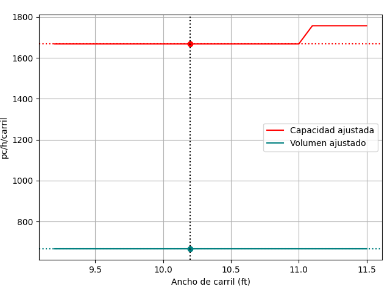
Gráfica 6. Variación de la densidad y velocidad FFS ajustada.

Análisis de sensibilidad al modificar el ancho de bermas.
Gráfica 7. Variación del Nivel de Servicio.
Gráfica 8. Variación de la Capacidad y volumen ajustado
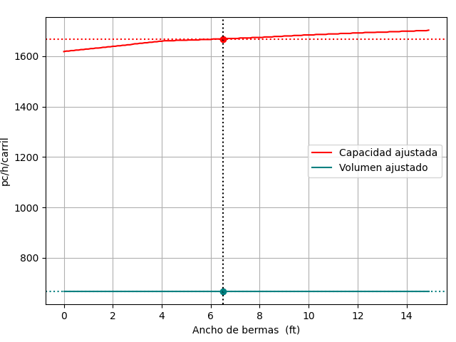
Gráfica 9. Variación de la densidad y velocidad FFS ajustada.
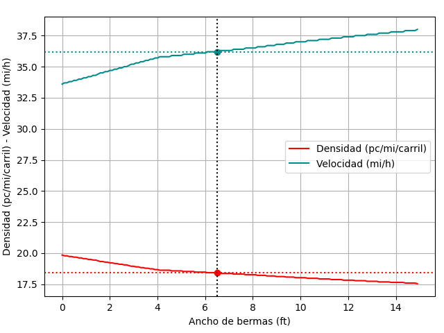
Análisis de sensibilidad al modificar la longitud del tramo.
Gráfica 10.Variación del Nivel de Servicio.
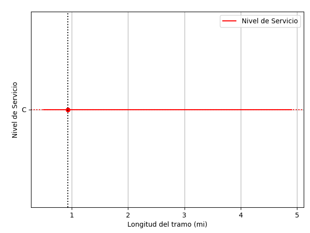
Gráfica 11. Variación de la Capacidad y volumen ajustado
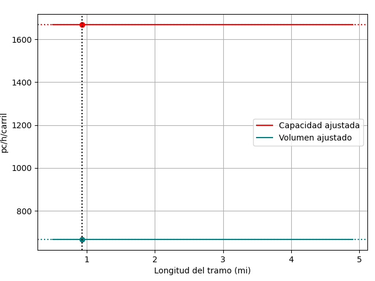
Gráfica 12. Variación de la densidad y velocidad FFS ajustada.
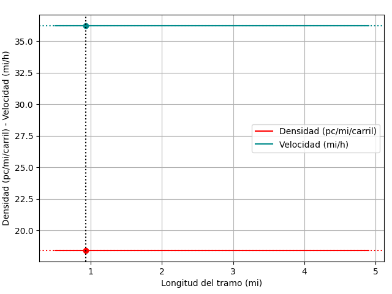
Análisis de sensibilidad al modificar la pendiente del tramo.
Gráfica 13. Variación del Nivel de Servicio.
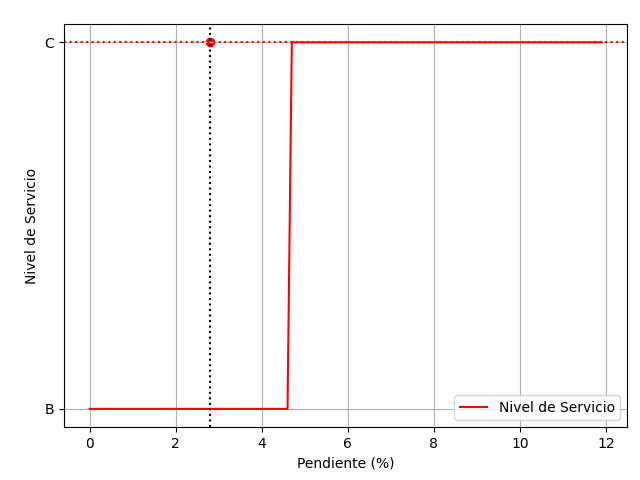
Gráfica 14. Variación de la Capacidad y volumen ajustado

Gráfica 15. Variación de la densidad y velocidad FFS ajustada.
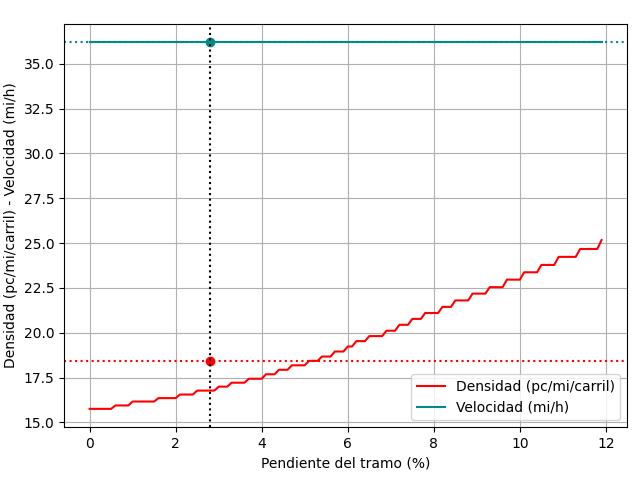
Análisis de sensibilidad al modificar el volumen de demanda.
Gráfica 16. Variación del Nivel de Servicio.
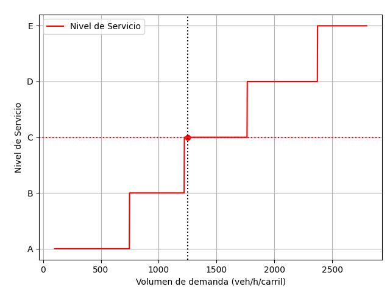
Gráfica 17. Variación de la Capacidad y volumen ajustado
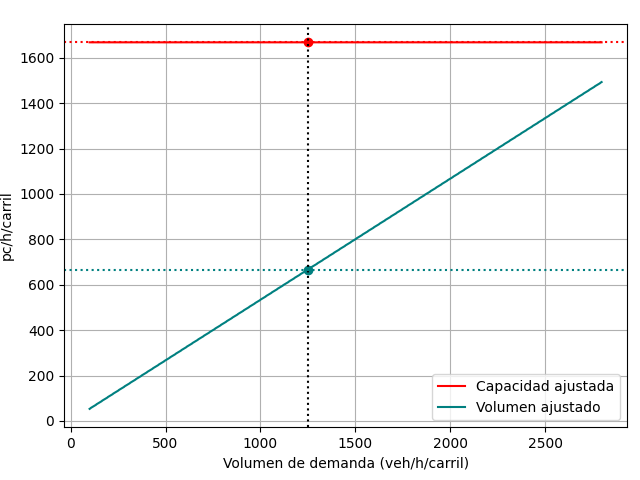
Gráfica 18. Variación de la densidad y velocidad FFS ajustada.
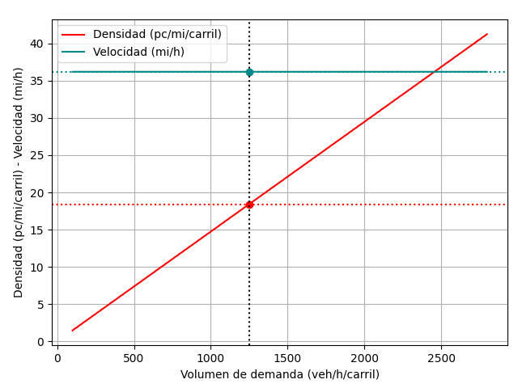
Análisis de sensibilidad al modificar el número de accesos.
Gráfica 19. Variación del Nivel de Servicio.
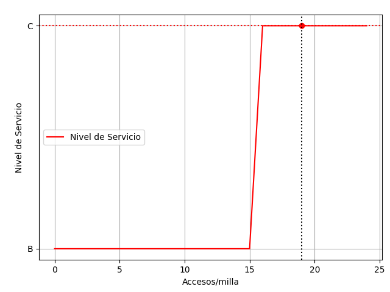
Gráfica 20. Variación de la Capacidad y volumen ajustado
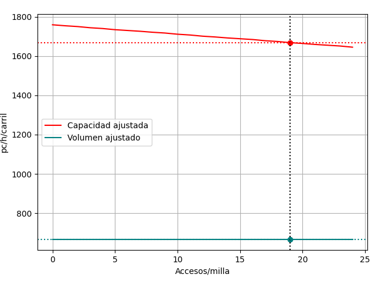
Gráfica 21. Variación de la densidad y velocidad FFS ajustada.
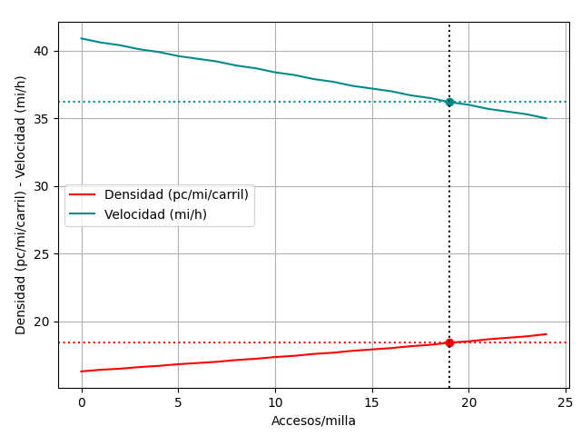
Análisis de sensibilidad al modificar el porcentaje de vehículos pesados.
Gráfica 22. Variación del Nivel de Servicio.
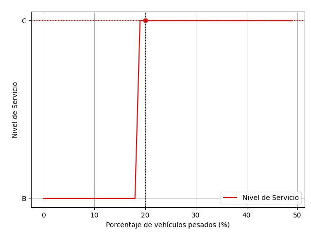
Gráfica 23. Variación de la Capacidad y volumen ajustado
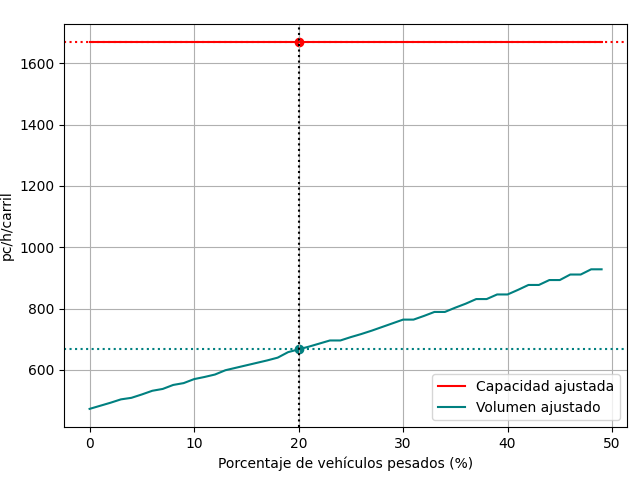
Gráfica 24. Variación de la densidad y velocidad FFS ajustada.
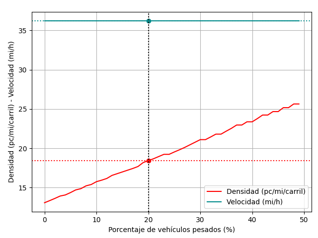